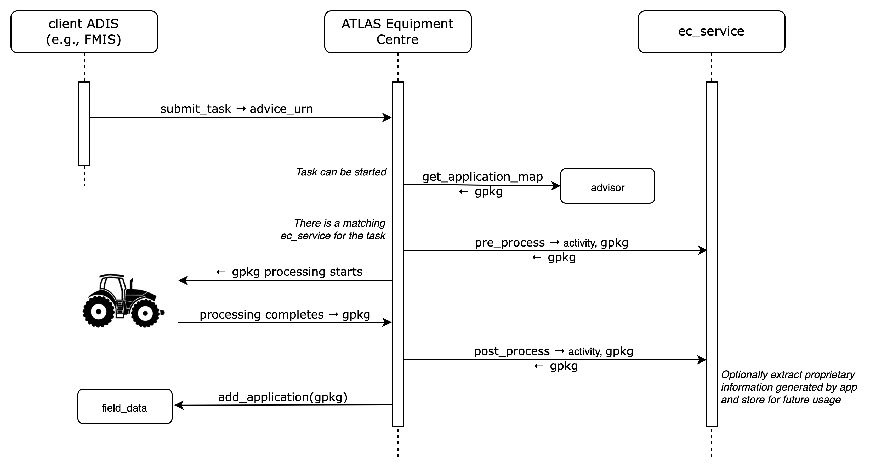

The "ec_extension" ATLAS Service Template
Abstract
This document describes the specifications for ec_extension services whose purpose is to provide a mechanism to dynamically extend the task processing capabilities of the ATLAS Equipment Centre.
1 Introduction
The ATLAS Equipment Centre handles transfer of application maps to tractors, the retrieval of the as applied results and the recording of applications on the farmer's field_data service. This processing is very generic and is not able to deal with advanced use cases.
The ec_extension service template defines a mechanism that enables dynamically configured ec_extension services to participate and enhance the ATLAS Equipment Centre task processing. Notably, the ec_extension service template introduces support for custom ATLAS AppEngine app that can further customize the task processing in near-real time.
2 Terminology
The key words "MUST", "MUST NOT", "REQUIRED", "SHALL", "SHALL NOT", "SHOULD", "SHOULD NOT", "RECOMMENDED", "NOT RECOMMENDED", "MAY", and "OPTIONAL" in this document are to be interpreted as described in RFC 2119 and indicate requirement levels for compliant implementations.
The notation "[xxx]" (xxx in square brackets) is equivalent to "array of xxx".
When used alone, the term "ec_extension" refers to "ec_extension ATLAS Service Template". Instead, "ec_extension service" is equivalent to "an ATLAS Service implementing the ec_extension ATLAS Service Template".
3 Pre-requisites
A thorough understanding in the following is required for
both service consumers or service provider implementors:
- GeoJSON specifications (https://geojson.org/)
- GeoPackage specifications (https://www.geopackage.org/)
- The ATLAS Equipment Centre
- The ATLAS AppEngine and AppEngine SDK
4 ec_extension Usage Scenarios
The following sections describe some aspects of the use of ec_extension. The examples were chosen to illustrate the basic operation of applications using ec_extension, not to limit what ec_extension may be used for.
4.1 Precision Crop Protection
The standard process for crop protection follows the “advisor pattern” described in the crop_protection service template: an advice for a field is prepared (e.g. based on remote sensing) and then a task (advice, equipment) is submitted to the ATLAS Equipment Centre to be carried out on the field.
Consider now the use case where a vendor would like to develop a device with a lidar to scan trees as it drives through an orchard and adjust the prescribed amount of crop protection accordingly to tree volume variations in near-real time. In addition, the vendor would like to offer a feature that allows farmers to visualize a 3D representation of their orchard on their web application.
The ATLAS AppEngine technology enables the integration on the tractor side, and the ec_extension service template provides the means to provide the data integration with the ATLAS world. For more technical details, see Dynamic Behaviour.
5 Service Template API Overview
This section provides a very high-level summary of the ec_extension API:
Configuration Endpoints
Get Capabilities
Task Management Endpoints
Is Task Processable
Pre-process Application Map
Post-process Application Result
Within this section, operations are summarised with simple tables:
+--------------------------------------------+
| logical operation name |
+-------------+------------------------------+
| Inputs | <URL parameters or |
| | request body attributes> |
+-------------+------------------------------+
| Outputs | <body attributes> |
+-------------+------------------------------+
Only the most meaningful parameters are discussed in this document. Please refer to the OpenAPI specifications for full details.
ec_extension services are not required to handle intense traffic from a single client, such as the one that may result from being directly invoked on user interface interactions in an FMIS, for instance. Implementors MAY generate a 429 TOO MANY REQUESTS error response if the rate of calls exceed some pre-defined quota.
5.1 Configuration Endpoints
5.1.1 Get Capabilities
Via this function, the ec_service indicates which types of tasks it is able to process and provides information about an optional companion app (download url, permissions, ...)
+--------------------------------------------+
| get_capabilities |
+-------------+------------------------------+
| Inputs | - |
+-------------+------------------------------+
| Outputs | processable task types, app |
+-------------+------------------------------+
5.2 Task Management Endpoints
5.2.1 Is Task Processable
The ATLAS Equipment Centre will determine that an ec_service is applicable for processing a task first based on the task types it supports, and second on the results of this endpoint
+--------------------------------------------+
| can_process_task |
+-------------+------------------------------+
| Inputs | advice_urn |
+-------------+------------------------------+
| Outputs | yes|no |
+-------------+------------------------------+
If the service indicates it cannot process the task, then the ATLAS Equipment Centre will continue processing the task with the default built-in behaviour. Otherwise, the endpoints described in the following sections will be invoked.
5.2.2 Pre-process Application Map
Through this function, an ec_service has the opportunity of adding proprietary information to an application map that may be of use to its companion app running in an AppEngine.
+--------------------------------------------+
| pre_process_map |
+-------------+------------------------------+
| Inputs | gpkg |
+-------------+------------------------------+
| Outputs | gpkg |
+-------------+------------------------------+
Even if no customization is performed, the service is expected to return the same application map it received.
5.2.3 Post-process Application Results
Through this function, an ec_service has the opportunity to extract proprietary information from an as applied map that may have been produced by its companion app running in an AppEngine.
+--------------------------------------------+
| post_process_results |
+-------------+------------------------------+
| Inputs | field urn, gpkg |
+-------------+------------------------------+
| Outputs | gpkg |
+-------------+------------------------------+
Even if no customization is performed, the service is expected to return the same application map it received.
6 Data Formats
This section focuses on the description of binary (file) data formats. Please refer to the ec_extension OpenAPI specifications for details on all other payload and parameter descriptions.
6.1 Application Map File Format
The application maps received in and returned by the pre_process_map endpoint are expected to be in GeoPackage ((https://www.geopackage.org) format version 1.2 or newer, compliant with the conventions detailed in the respective advisor service templates.
6.2 Application Results File Format
The resulting as applied maps received in and returned by the post_process_results endpoint are expected to be in GeoPackage (gpkg) format, compliant with the conventions detailed in the field_data service template.
7 Access and Authentication
Farmers MUST have an account setup on an ec_extension service in order to authenticate and access API endpoints. The service implementor is responsible for the creation of accounts; it is not covered in the service template specifications.
Unless specifically documented in the OpenAPI specifications, all API calls must include credentials in form of Bearer authentication (also called token authentication). Clients can obtain an access token on behalf of their user from the service's authorization server (see ATLAS service pairing).
Some of the information held by advisor services may be considered sensitive from a GDPR perspective. The service's authorization server SHOULD request the client's end-user consent at service pairing time in order to deliver an access token.
8 Dynamic Behaviour
The purpose of the diagrams in this section is to illustrate communication patterns, more complex than plain request/response API calls, that involve several interactions and/or asynchronous behaviour. Even though a sequence diagram representation is used, the diagrams are by no means to be interpreted as UML Sequence Diagrams. Specifically, in the spirit of focusing on functional behaviour and readability, error handling is deliberately not covered in the diagrams.
8.1 ec_extension Service with Companion App
